论文：Force-directed graph layouts revisited: a new force based on the t-Distribution
作者：Fahai Zhong, Mingliang Xue, Jian Zhang, Fan Zhang, Rui Ban, Oliver Deussen and Yunhai Wang
发表：VIS2023
本文提出了一种名为t-FDP的模型，这是基于一种新颖的有界短程力（t-force）的力导向布局方法，这种力由Student’s t分布定义。该模型公式灵活，对邻近节点施加的排斥力有限，并且可以分别调整其短程和长程效应。通过在力导向图布局中使用这种力，可以比现有方法更好地保持邻域关系，同时保持较低的应力误差。作者还提到，他们使用快速傅里叶变换的高效实现比现有最先进的方法快一个数量级，在GPU上快两个数量级，这使得他们能够通过全局和局部调整t-force来实时进行复杂图的参数调优。通过数值评估与现有最先进的方法进行比较，作者展示了他们的方法在交互式探索中的扩展，证明了其方法的优越性。
背景介绍
现有力导图布局算法的不足点
• 相邻的两个连接节点之间的斥力很大，导致节点的邻域结构不能得到很好的保留
• 最新的基于邻域嵌入的图布局算法tsNET可以比较好地保留2环邻域结构，但其应力误差(stress error)比较大，且不能有效保留1环邻域结构
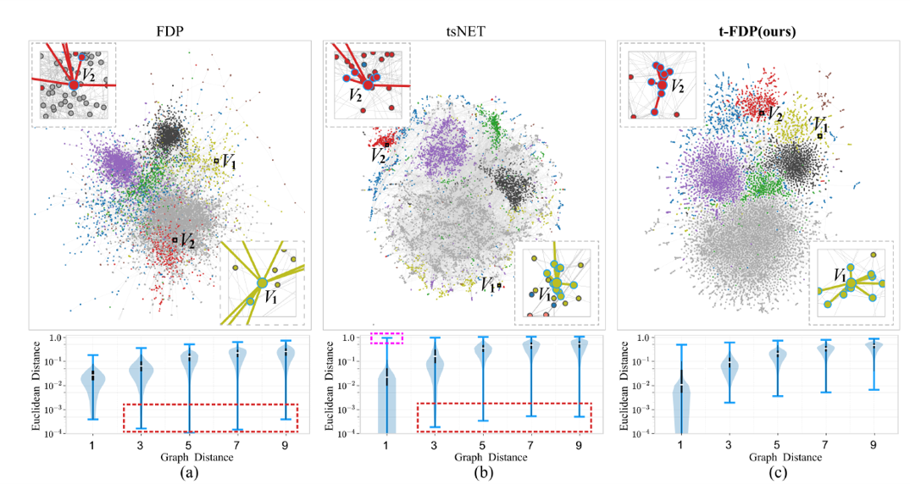
相关工作
力导布局算法
• Spring-electric model
• Stress model
t分布在图布局中的应用
• 降维领域的应用：t-SNE、LargeVis、UMAP、TriMap、tsNET
t分布函数：
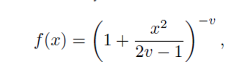
方法
传统力导布局的设计原则和不足
Fruchterman and Reingold(FR)算法的两个设计原则：
• P1：有边相连的节点应该彼此接近
• P2：从全局角度看，节点之间不应该靠得太近
P1和P2不能保证有边连接的两个节点之间的距离相较于其他节点来说最近
本文提出第三个设计原则：
• P3：有边连接的节点相较于没有边连接的节点，有边连接的节点应该更近传统的基于spring-electric的力导布局算法
斥力和引力的计算公式：
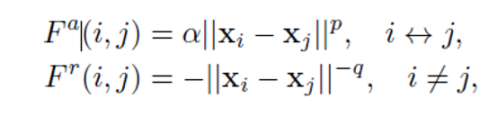
xi表示节点在二维空间中的位置，p和q均为非负
该算法的不足点：
短程的强斥力会把图论距离近的节点在欧式空间中推的比较远，
长程的强引力会把原本属于一个簇团的节点分开为多个小的簇团
举例：
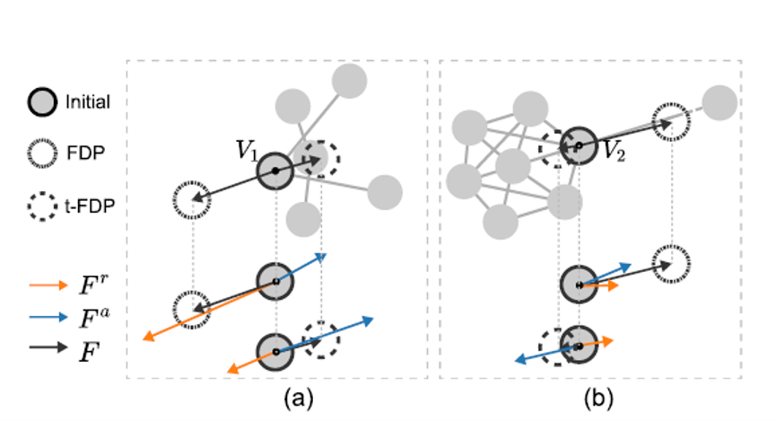
(a) V1被三个非邻域节点推离其所属簇团
(b) V2被远处节点拉离其所属簇团
t-force的定义
提出一种新的基于t分布的短程力，这种力应该满足下面三个条件：
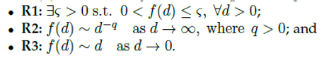
其计算函数为：
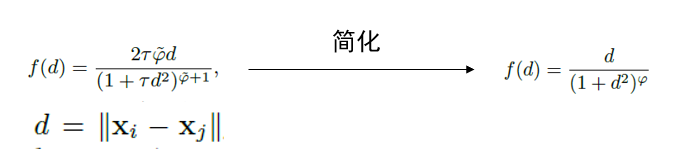
其函数图形为：
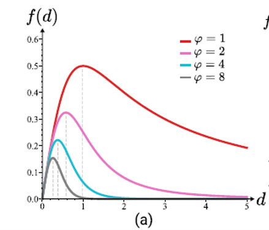
t-model的定义
斥力：直接由t-force定义
引力：线性引力 + t-force
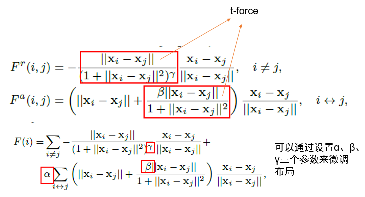
调参举例
下图(d)，α和β在不同值下的布局效果，其中最上面的图具有更加均匀的全局结构，最下面的图保留了更多的邻域结构
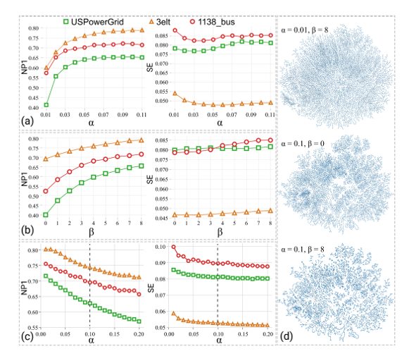
下图(a)中随着γ的增加，节点更加聚集
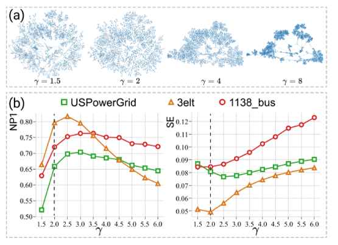
基于插值的快速傅里叶变换(ibFFT)
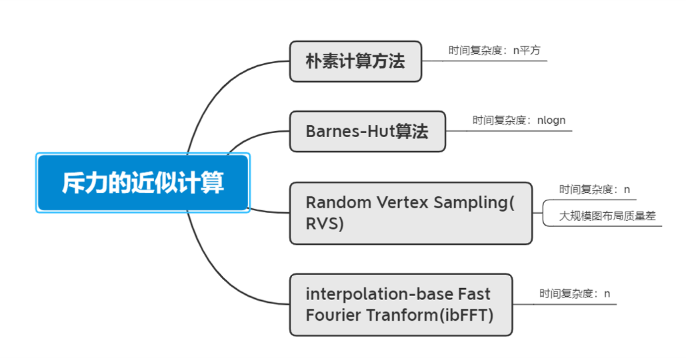
评估
评估一：ibFFT和其他近似计算方法的比较
t-FDP-exact(baseline)
t-FDP-BH
t-FDP-RVS
t-FDP-ibFFT(CPU)
t-FDP-ibFFT(GPU)
评估二：基于ibFFT的t-FDP与其他布局算法的比较
10个布局算法：FR, FR-RVS, SFDP, Linlog, FA2, PMDS, Maxent, SM, tsNET, DRGraph
四个量化指标
• Normalized stress error (SE)
• Neighborhood Preservation Degree (NP)
• Crosslessness (CL)
• Minimum Angle (MA)
数值上，SE越小，NP、CL、MA越大，图质量越好
相对量化指标：SE为例：X为布局，下标s为source，t为target
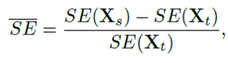
评估一： ibFFT和其他近似计算方法的比较
四种近似计算方法和baseline在四个指标上的比较(下图)
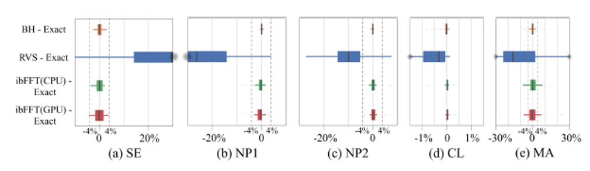
时效性比较(下图)
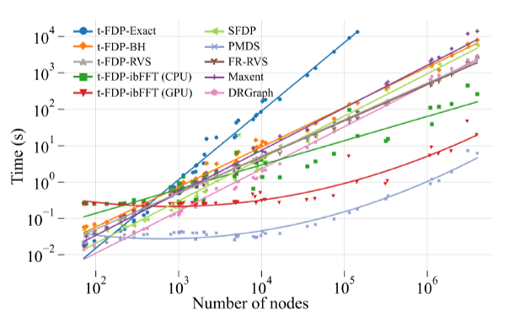
评估二：基于ibFFT的t-FDP与其他布局算法的比较
11种布局算法在50个数据集上的结果比较
SE, NP1, NP2三个指标上的结果展示(下图)
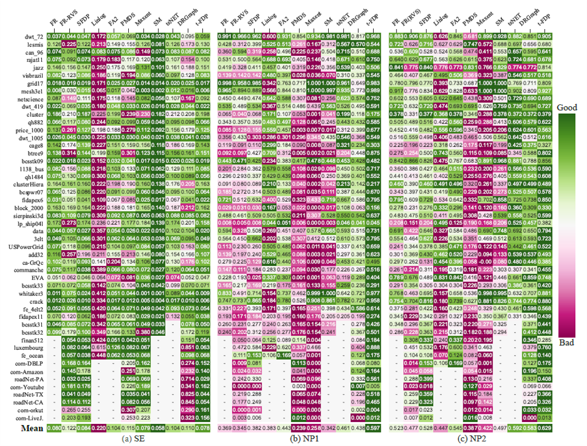
可读性比较(下图)
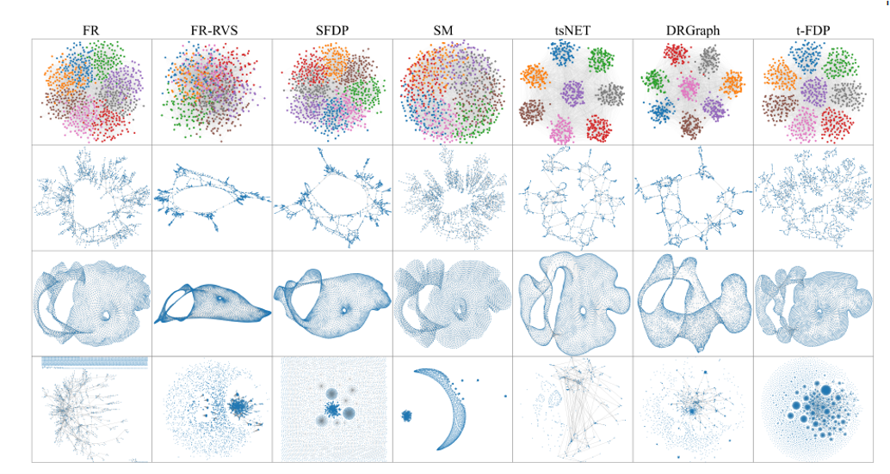
拓展
支持全局调整和局部调整
全局调整：可以通过增加斥力让节点分布更均匀(a)，或减少斥力来聚集节点以显示主体结构(b)
局部调整：增加焦点节点之间的引力，同时增加焦点节点和其邻域节点之间的斥力，以达到类似鱼眼的效果
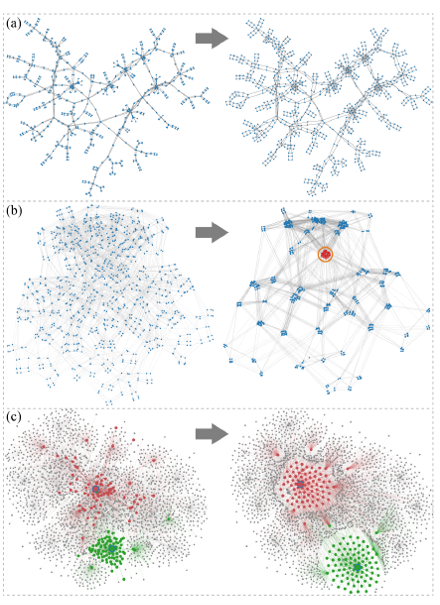
讨论
不足点：
• t-FDP在距离保持(distance preservation)的表现不如stress model，之后可以在长程力(long-range force)上做优化
• 相比较于传统的力导布局算法，t-FDP算法需要设置三个参数，一定程度上增加了复杂度，后续工作可以围绕自动设置参数来展开
✉️ zjuvis@cad.zju.edu.cn